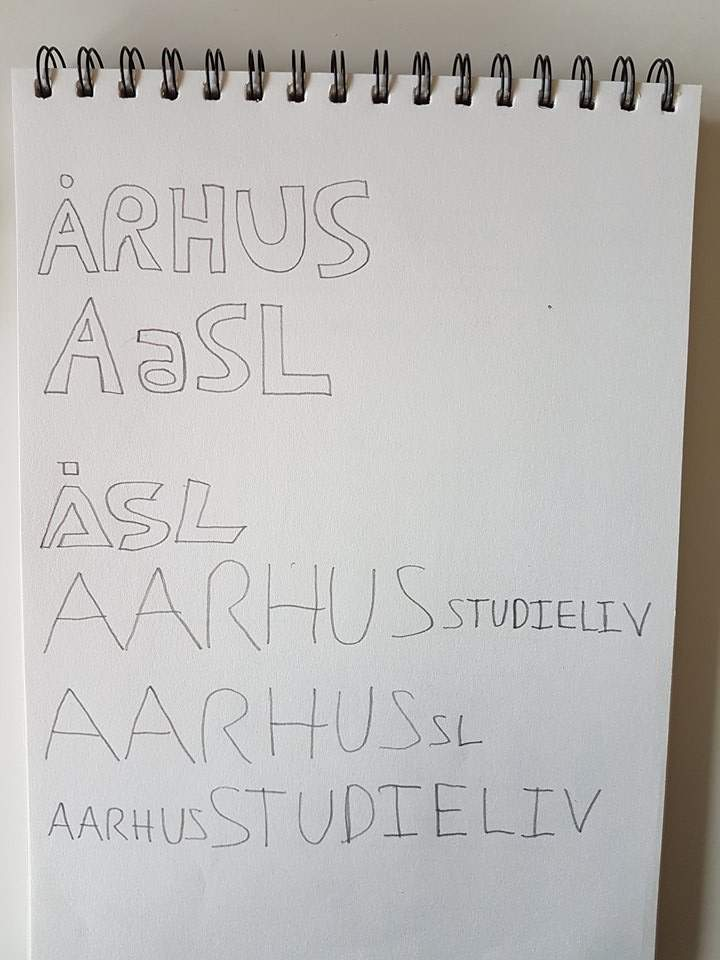
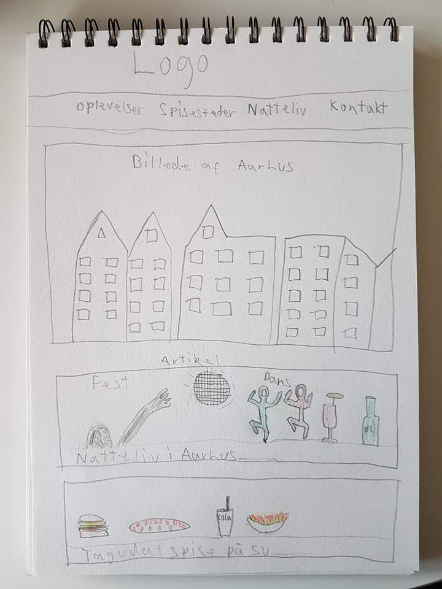
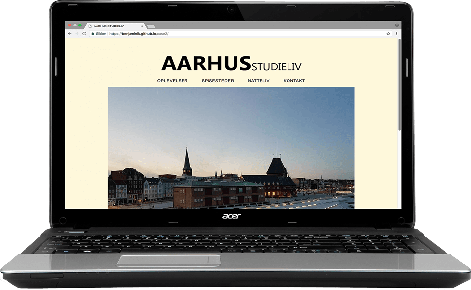

Case 2 - Online Magasin
Kunde: "Medstuderende"
Dato: 13. okt. 2017
Produkt: Online Magasin
Case 2 – Online Magasin
Projektbeskrivelse
Case 2 var et individuelt projekt, som gik ud på at lave et Online Magasin. Projektet måtte handle om næsten alt og var kun begrænset af målgruppen, som var vores medstuderende. Mit koncept var, at informere mine medstuderende om, hvad man kunne lave i Aarhus og skulle især være interessant for ny tilflyttere. Hjemmesiden kom til at hedde Aarhus Studieliv.

Virksomhed og Kommunikation
I dette projekt var jeg selvstændig og skulle selv planlægge og strukturere projektet. Jeg havde ikke en sprintmetode, jeg skulle følge, hvilket til dels var rart nok. Jeg blev utroligt tidspresset i dette projekt. For det første måtte jeg skifte emne, da mit første emne ville være svært at tage billeder til og jeg skulle derfor starte min design proces forfra. For det anden fik jeg ikke lavet en ordentlig tidsplan. Jeg lavede en tidsplan i Trello, men den var ikke lavet særlig grundigt, og jeg fik ikke rigtig fulgt den.
Op til projektet lærte vi i kommunikation, hvordan man skulle sætte artikler op, med hensyn til overskrift, underoverskrifter osv. Den læring fik jeg meget nytte af, da jeg skulle skrive min artikler, og jeg sparede derfor også en del tid. Jeg vil i den grad kunne bruge de gode råd til artikelskrivning i fremtidige projekter, hvis de indeholder artikler.
Til en anden gang vil jeg lave en grundig tidsplan og løbende følge op på den.
Design
 Til Design delen i case 2 skulle jeg selv designe et logo, hvilket var meget sjovt, men også svært. Efter nogle forsøg på at lave forskellige logoer besluttede jeg mig for, at det bedste var et logo lavet af almindelige bogstaver, hvor der kun var forskel på de to ords størrelse og tykkelse. Jeg lærte ved logo processen at lege med forskellige måder at lave logo på.
Udover at lave logoer fik jeg også lært Photoshop bedre at kende, da jeg skulle lave moodboards og mockups. Jeg lærte også hvordan farverne spiller godt sammen. Jeg valgte f.eks. en blå farve til min footer, da der var meget blå i mit forsidebillede.
Generelt lærte jeg at tænke meget mere over design valg i forhold til at lave en hjemmeside. Det der gik galt, var at jeg begyndte at kode, før jeg var færdige med mine mockups og det var derfor mere mine mockups der kom til at ligne min kodning, i stedet for at min kodning kom til at ligne mine mockups. Til næste gang vil jeg derfor lave mine mockups fuldstændig færdige, før jeg går i gang med kodningen, så mine mockups ikke bare bliver begrænset af mine evner indenfor kodning.
Interaktion
Jeg lærte rigtigt meget i css og html, da dette projekt var selvstændigt, og jeg derfor skulle kode det hele selv. En anden ting jeg har lært, er at man tit skal forsøge flere gange, før tingene lykkedes, men at bliver man ved lykkedes det meste i sidste ende. Dog skal man også vide, hvornår man skal gå videre med noget andet, så man ikke kommer i tidspres, hvilket jeg gjorde i dette projekt.
Efter min feedback, fandt jeg ud af, at jeg fremadrettet skal tænke mere over om der skal bruges % eller px til brug af padding og margin. Jeg skulle heller ikke have et så stort forsidebillede, da man så ikke kan se, at der er indhold under billedet.
Konklusion
Jeg kan konkludere at det er vigtigt med at jeg planlægger mit næste projekt nøje, så jeg ikke kommer i det samme tidspres igen til næste projekt. Jeg vil også i næste projekt sørge for at lave mockups færdige, før jeg går i gang med kodningen, så mockups ser ud, som jeg gerne vil have hjemmesiden til at se ud og ikke er begrænsede af mine færdigheder indenfor kodning.Jeg føler at jeg har udviklet mig rigtig meget siden case 1. Da vi startede på case 1, følte jeg stadigvæk, at jeg lige var startet på uddannelsen og efter case 2, føler jeg, at jeg kan meget mere indenfor alle uddannelsens fag.